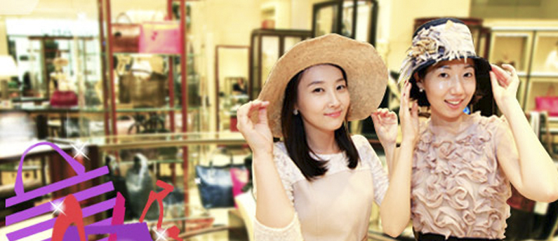

All You Need To Know About Korean Food - where to eat, what it is, and how to eat it! Check out our guide to the best restaurants in all the different parts of Seoul and learn where to go to get the best kimchi, ginseng, liquor, & more. Korea is a shopper’s paradise! Luxury brands, the latest fashions, cosmetics, souvenirs & more. Check out our sales & discount calendar, so you’ll know the best time to shop.
Tips & information
Dining traditions and utensils vary from country to country, as do notions of etiquette. Here are some examples of Korean Table Etiquette:
1. When in the company of elders, take your seat according to social ranking with the youngest or lowest ranked person closest to the door. After the elders pick up their spoons, others can begin to eat. Try to keep pace with elders while eating. It could be considered rude to show that you have finished your meal before elder people have. If at all possible, keep eating a bit until the elders have finished their meal.
2. The spoon and chopsticks should not be held together in one hand. Use the spoon only for rice and soup.
3. For the sake of cleanliness, do not use a used spoon for side dishes.
4. Use an individual plate for your own food when platters arrive for the entire table. Be careful not to make noises when eating and drinking. Avoid knocking your spoon, chopsticks or plates around.
5. Take food within reach and do not stretch your arms out too far.
6. After a meal, return your spoon and chopsticks to the spot where they were placed. Fold the used napkin and put it back on the table.
7. When coughing or sneezing during a meal, turn your head to one side and cover your mouth with a handkerchief as to not bother your neighbors. Nose blowing should be saved for the restroom.
Korea is a shopper’s paradise! Luxury brands, the latest fashions, cosmetics, souvenirs & more. Check out our sales & discount calendar, so you’ll know the best time to shop.
1. Sizing
Most sizes are measured in centimeters except for the waist size, which is measured in inches. Shoe sizes are measured in millimeters.
2. Payment methods
Except for street vendors, most shops follow a fixed price system and do not appreciate aggressive haggling. Most larger shops accept major international credit cards (VISA, MASTER, etc). Most smaller shops, traditional marketplaces, and street vendors do not accept credit cards, so be sure to bring cash.
3. Currency exchange
Typically, banks have separate counters for those wishing to exchange foreign currency. The bank is the most convenient place to exchange currency, and business hours are 9:00 a.m. – 16:00 p.m., Mon – Fri. The ‘365 Days Corner’ ATM has options in English and can be found next to many major banks. The ATM can be accessed from 7 a.m. to 11:30 p.m. 24-hour ATM services can be found in almost all 24-hour convenience stores, but English options are not always available. Visitors are advised to visit the bank during regular visit hours to get the cheapest service charge. Note that service charges may vary according to each bank. Namdaemun Market and Itaewon districts provide their own foreign currency exchange service centers. Directions to local foreign exchange service centers are provided at each area’s tourist information center.
4. Tax refund
Shops with "Tax Free Shopping" signs will provide you with duty-free shopping and information about tax refunds.
5. Returns and exchanges
While many large department stores and malls will allow returns, many smaller stores may not offer refunds for purchased items (especially for sale items). Most stores will allow exchanges instead of returns within the designated exchange period (varies by store).
6. Sale periods
Duty-Free Shops: June – August, December – February. Department Stores: January, April, July, October, and December. Other large shopping malls hold sales around the same time as the department stores do. Namdaemun Market, Dongdaemun Market, and other major markets have sale events around early July and mid-January. Summer and winter sale events give customers the biggest discounts: 20-30% off of current items and more than 50% off of items more than 2 or 3 years old.
7. Business hours
Most shops are open until 10 p.m., but markets like Dongdaemun Market are open 24 hours. Shops are the most crowded during holidays and weekends, except for the Lunar New Year and Chuseok, during which most shops are closed. Shops in Myeong-dong and Insa-dong are usually open until 10 p.m., whereas Namdaemun Market and Dongdaemun Market are still open long after midnight into the early morning.
8. Korean shopping phrases
Except for duty-free shops or shops in Itaewon, you may run into communication problems while shopping. If you know a few Korean shopping expressions, you’ll find your shopping experience more enjoyable and you may even be able to bargain for lower prices!